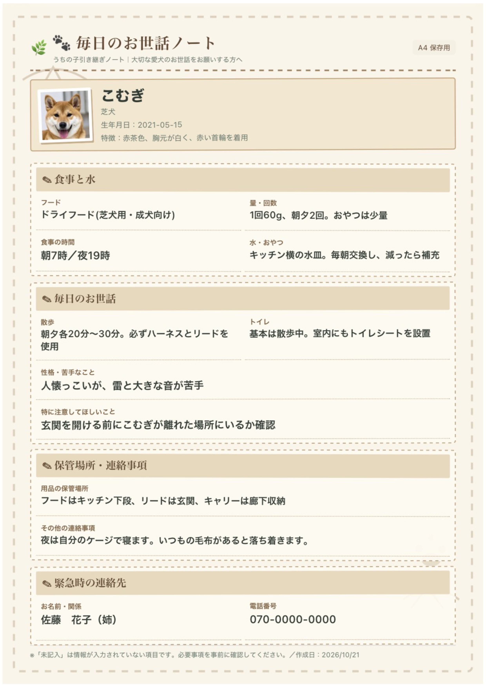

🐾 A4書類・A4全体表示テスト v5
元の正常な書類画像から、四辺の外側の白い余白のみを取り除きました。文字・外枠・最下部の連絡先を残しています。下記3ファイル（HTML・PNG・PDF）をGitHubの同じフォルダにアップロードしてください。
A4全体PNG画像を開くA4全体PDFを開くPNG：開いた画像を長押しして「写真に保存」。PDF：共有から「ファイルに保存」。実際の紙へのフチなし印刷はプリンターの対応状況によります。書類プレビュー

これはサンプルの保存テストです。完全版の入力内容を反映する機能はまだありません。